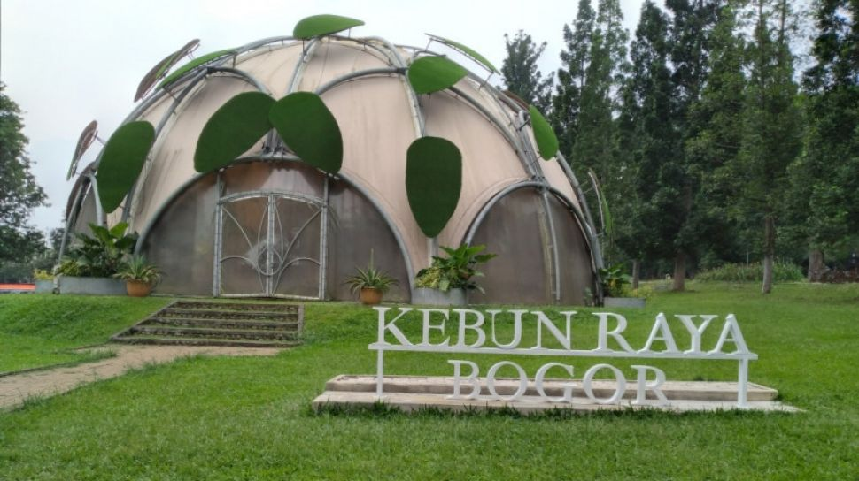

Kebun Raya Bogor
Kebun Raya Bogor adalah taman botani terbesar dan tertua di Indonesia yang menyimpan berbagai koleksi flora tropis. Terletak di pusat Kota Bogor, tempat ini cocok untuk rekreasi sekaligus edukasi botani. Lanskapnya yang hijau dan asri menawarkan suasana tenang yang ideal untuk bersantai bersama keluarga.